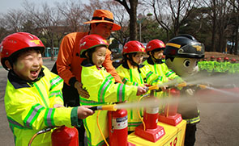
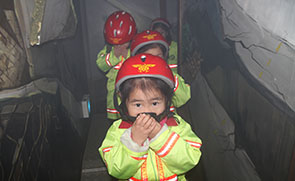
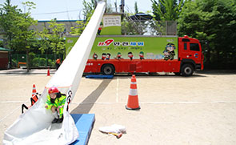

<?php include 'header.php'; ?>

	<div id="sub_wrap">
		<div class="inner clearfix">

			<nav id="left_area">
				<h3>참여교육</h3>
				<ul class="sub_menu">
					<li><a href="sub02-01.html">칭찬합시다</a></li>
					<li><a href="sub02-02-01.html" class="ico_submenu">소방안전교육</a>
						<ul class="sub_depth02 clearfix">
							<li><a href="sub02-02-01.html">- 소방서 안전체험교실</a></li>
							<li><a href="sub02-02-02.html">- 이동안전차량 체험교육</a></li>
							<li><a href="sub02-02-03.html">- 출장 소방안전교육</a></li>
							<li><a href="sub02-02-04.html">- 소방안전교육 예약신청</a></li>
						</ul>
					</li>
					<li><a href="sub02-03-01.html" class="ico_submenu">안전체험관 예약</a>
						<ul class="sub_depth02 clearfix">
							<li><a href="sub02-03-01.html">- 안전체험관 안내</a></li>
							<li><a href="https://fire.seoul.go.kr/boramea" class="linkout_menu" target="_blank" title="새창열기">- 보라매 안전체험관</a></li>
							<li><a href="https://fire.seoul.go.kr/gwangnaru" class="linkout_menu" target="_blank" title="새창열기">- 광나루 안전체험관</a></li>
						</ul>
					</li>
					<li><a href="sub02-04.html">다중이용업소 안전교육</a></li>
				</ul>
			</nav>
			<!-- // 좌측메뉴 -->

			<section id="right_area">
				<div class="breadcrumb clearfix">
					<h2 class="jumbo">이동안전차량 체험교육</h2>
					<ul>
						<li><a href="index.html" class="gohome">홈으로</a></li>
						<li>참여교육</li>
						<li>소방안전교육</li>
						<li>이동안전차량 체험교육</li>
					</ul>
				</div>
				<!-- // jumbotron + breadcrumb -->

				<div class="subpage">
					<h3>서울소방재난본부 안전교육</h3>
					<p class="txt">안녕하십니까, 서울소방재난본부는 시민고객 여러분의 자율재난대처능력 향상을 위하여 소방안전교육을 실시하고 있습니다. <br />서울에는 25개구에 24개의 소방서가 있으며 여러분은 가장 가까운 곳에서 정기교육 및 수시교육을 받으실 수 있습니다. <br />유아, 초ㆍ중ㆍ고등학생, 대학생, 직장인, 주부, 장애인, 노인 등 서울 시민 모두가 안전해지는 그날까지 최선을 다하겠습니다.</p>

					<h3>이동안전체험차량</h3>
					<p class="txt">안전체험을 하고 싶은데 꼭 소방서를 가야 하냐구요? 시간과 공간의 제약을 벗어나 안전체험교육을 받으실 수 있습니다. 소화기 체험, 열연기 대피체험, 역화체험, 지하철 문 개방 체험, 경사 구조대 탈출 및 완강기 체험 등 15가지의 직ㆍ간접 체험시설을 갖춘 이동안전체험차량을 활용하여 필요한 순간, 원하는 장소에서 안전체험을 경험해보세요.</p>
					<div class="imgbox">
						<ul class="charList3 clearfix">
							<li><div class="charImg"></div><p class="charTxt">소화기체험</p></li>
							<li><div class="charImg"></div><p class="charTxt">연기대피체험</p></li>
							<li><div class="charImg"></div><p class="charTxt">경사구조대탈출체험</p></li>
						</ul>
					</div>
					<dl class="subTxt">
						<dt>이동안전체험차량이란?</dt>
						<dd>안전체험시설을 완비한 특수차량으로써 서울시내 어디든 이동하여 체험교육을 진행합니다. <br />(단, 20m × 20m의 넓은 공간이 필요합니다.)</dd>
						<dt>이동안전체험차량은 몇 대?</dt>
						<dd>현재 서울에 총 3대가 운행 중이며 지역을 구분하여 출장교육을 담당하고 있습니다.</dd>
						<dt>이동안전체험교육을 받고 싶으면?</dt>
						<dd>가까운 소방서 안전교육담당자에게 문의하여 일정과 장소를 먼저 협의하세요.</dd>
						<dd>예약신청 페이지에 가시면 상세정보 확인이 가능합니다.</dd>
						<dt>이동안전체험차량 일정</dt>
						<dd>체험 예정일 외의 예약은 관할소방서 안전교육 담당과 일정 협의</dd>
					</dl>
				</div>
				<!-- // 서브컨텐츠 -->
			</section>
		</div>
	</div>

<?php include 'footer.php'; ?>